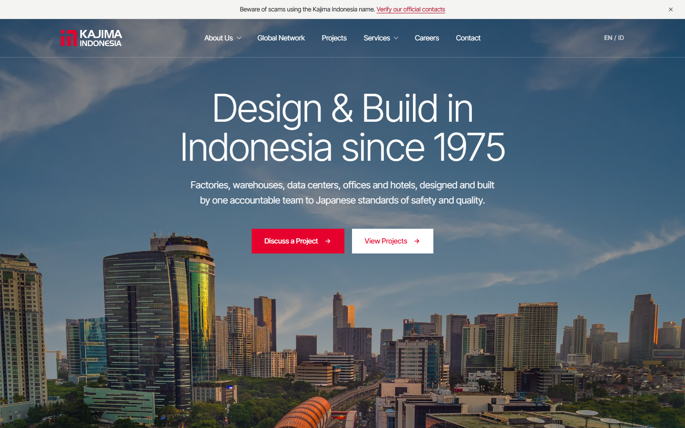
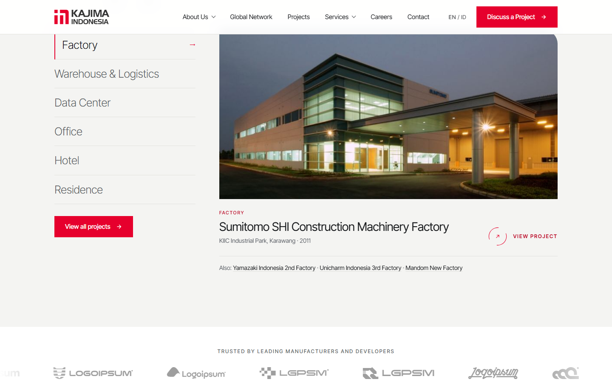
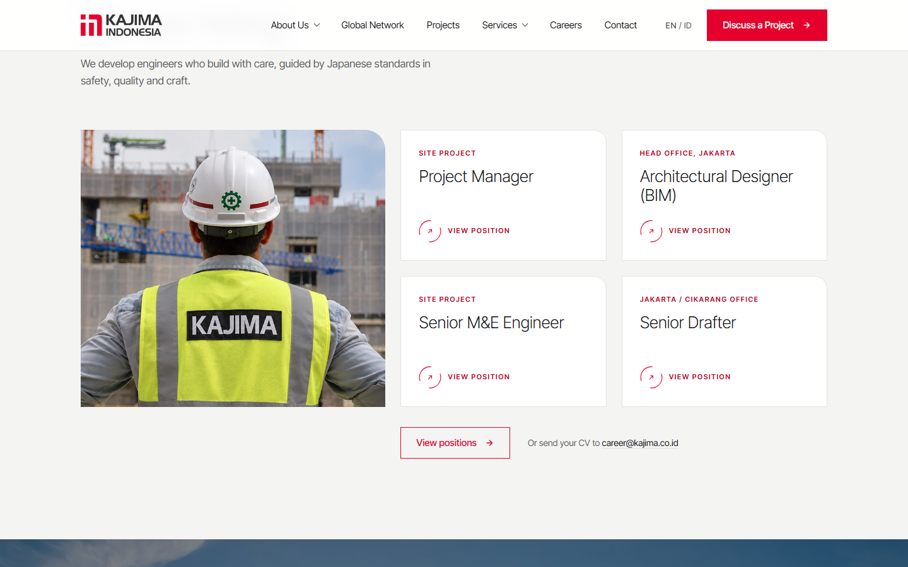

Summary
Kajima Indonesia's website is rarely the first contact with a client. Projects arrive through relationships, Kajima's Japanese head office, industrial estates, consultants and tenders. Visitors come to check Kajima: is it capable, proven, safe and compliant? Today the site does not answer that well.
The proof is hidden
Strong credentials (since 1840 and 1975, ISO and SMK3, Japanese MNC clients) sit deep in inner pages; project pages are dead ends; dated numbers and broken links weaken trust.
Pass due diligence, then start a conversation
Turn a verifying visitor into a project enquiry ("Discuss a Project"), with recruitment and scam verification as clear secondary paths.
Proof first, in a calm Japanese-corporate voice
A homepage ordered like a client's checklist: who Kajima is, what it has built, how it works, why it is safe, and one clear next step.
Scope of this work
- Hi-fi homepage, plus an animated version with smooth scrolling and micro-interactions.
- 24 inner pages as low-fidelity wireframes that follow the homepage style (with hi-fi header and footer).
- A design system (foundations, components, states, do's and don'ts).
- Planning documents: audit, user research and strategy, journeys, sitemap, references, direction and copy.
Business context
PT Kajima Indonesia is a general contractor and design-build company for buildings, part of Kajima Corporation, one of Japan's five "super general contractors".
What Kajima Indonesia builds
- Factories and warehouses for Japanese manufacturers in the Bekasi, Karawang and Cikarang industrial estates (Mandom, Unicharm, Sumitomo SHI, Takasago, Yamazaki, Ajinomoto, Mitsui).
- Commercial buildings: offices, hotels, apartments and data centres.
- Its own property development (Senayan Square).
What it offers
- One point of responsibility from design to handover (design-build).
- Japanese quality and safety standards: KTMS, SQCDE, ANZEN Leaders, ISO 9001, 14001, 45001 and 37001, and SMK3.
- Group strength: design by Kajima Design Asia (45 architects and engineers), technology from KaTRI, a network in 19 countries.
- Certainty of time and cost: fast-track starts, reliable cost projection, value engineering.
- Integrity: anti-bribery certification (ISO 37001), whistle-blowing channels.
What the website should achieve (in priority order, to confirm with the client)
| # | Objective | Today |
|---|---|---|
| 1 | Win project enquiries and tender invitations | "Contact Now" in the hero; no guided path |
| 2 | Recruit experienced engineers and staff | 8 open roles on one long page |
| 3 | Protect reputation: official verification against scams, whistle-blowing | Scam pop-up covers the hero |
| 4 | Show the strength of Kajima Group | Full-screen world map |
The core issueAll four objectives get equal weight on the current homepage, and none of them has a complete path.
Existing site audit
Audit of kajima.co.id on 26 Oct 2026: every main page on desktop (1440 px) and mobile (390 px), the Kajima group sites (kajima.co.jp, kajima.com.sg) and a social media search.
| Area | Finding | Severity |
|---|---|---|
| Business goal | The site never says who it is for or what visitors should do. The tagline is generic and grammatically off ("specialist in all kind buildings"). | High |
| Proof | Strong evidence exists but is buried in inner pages. Homepage numbers are out of date ("46 years", © 2021). | High |
| Conversion | Project and service pages end with no next step. The contact form looks incomplete. No vendor path, no downloadable company profile. | High |
| Rendering | In automated Chrome tests, the Numbers, Contact, Whistle-blowing and Careers sections rendered empty although the text is in the HTML. | Critical if confirmed |
| Interface | Thin light-grey text (low contrast), stock photos mixed with real projects, a full-screen world map, a scam pop-up that covers the first screen on mobile. | Medium–high |
| Technical hygiene | "Privacy Notice" links to the scam page (no real privacy policy, although Indonesia's PDP law applies and the site collects CVs). Typos, file names as alt text, an outdated CMS (Mollom, discontinued 2018). | Medium |
| Brand consistency | Theme assets shared with Kajima Thailand: a "THAI KAJIMA" logo file and a worker photo with a "THAI KAJIMA" vest. "Core Strengths" is filed as a service, although it is a benefit. | Medium |
Group sites and social media
- All Kajima group sites share the red logo, a formal factual tone, real project photos and visible compliance channels. The redesign should stay recognisably "Kajima Group".
- No official Kajima Indonesia social accounts were found (only Jobstreet and Jobplanet profiles). The website is the only official source, so its verification role against scams must be strong.
What the current site does well, and we kept
- Real project photography and the 2026 Kajima red.
- Character pieces visitors remember: the illustrations in "KAJIMA in numbers" (Fuji, Monas, skyline), the line–dot–line divider, the Kajima mark on the map and the round "play" button, now refined.
Existing analytics
No analytics, Search Console data, form statistics or visitor surveys were provided for this proposal. We did not invent numbers. The strategy rests on the audit, the client's portfolio, group benchmarks and known patterns in B2B construction buying.
- Page-by-page content inventory of the current site.
- Rendering tests on desktop and mobile.
- Benchmark of Kajima HQ, Kajima Asia Pacific and peers (Takenaka, Obayashi, Shimizu).
- Ten reference sites of design-build contractors.
- Search for official social channels and job listings.
- 12 months of analytics: top landing pages, traffic sources, device split, bounce on project pages.
- Search Console queries (for example "kontraktor pabrik", "lowongan Kajima").
- Monthly volume and source of enquiries (web form, email, phone) and job applications.
- Number of scam reports received.
Why it mattersThese numbers set the baseline for the success measures in section 10 and confirm or correct the persona priorities in section 5. They should be collected before launch.
Audience research
Five audiences, drawn from the portfolio and industry patterns. They are hypotheses to validate with the client and the analytics above.
| Persona | Who | What they need | How they arrive | Primary action |
|---|---|---|---|---|
| P1 · Expansion lead | President director or GM of a Japanese manufacturer in Indonesia; facilities team at the Japanese HQ | A trusted contractor that handles design, permits and construction on schedule; material to share with the decision group (ringi) | Referral from HQ, industrial estate or consultant; already knows the Kajima name | Discuss a Project |
| P2 · Pre-qualifier | Developer, procurement team, PM/QS consultant building a tender list | Track record by sector, certificates, legal documents, safety statistics | Google search, desktop, office hours; compares contractors side by side | Discuss a Project / tender invitation |
| P3 · Engineer | Civil, M&E, QS, BIM and drafting professionals, 27–45, Jabodetabek | Clear, current roles; easy mobile application; proof that a job ad is genuine | Jobstreet, LinkedIn, Google; mobile first. Likely the largest volume | Apply for a role |
| P4 · Partner | Subcontractors and suppliers | Vendor registration; a way to verify requests made in Kajima's name | Often targeted by scams | Verify / register |
| P5 · Public | Regulators, whistle-blowers | Policies, code of conduct, reporting channels | Footer, search | Report |
Homepage priorityP1 and P2 equally (business), then P3 (recruitment), then P4 and P5 as utility paths always visible in the alert bar and footer.
Strategy
| Role of the site | Verification and proof, then a bridge to a project conversation. Second: the official recruitment channel. Third: the official source against scams. |
| Journey stage | Consideration and conversion, not awareness. Awareness only through sector pages and search. |
| Primary action | Discuss a Project: a short qualifying form (building type, location, size, timing). Supported by a downloadable company profile. |
| Sweet spot | Project certainty: on time, on budget, safe and compliant, with one partner who knows Japanese standards and Indonesian regulation. |
| Structure principle | Follow the client's due diligence: who is Kajima → have they built something like mine → how do they work → are they safe and compliant → what do I do next. |
Message
Design & Build in Indonesia since 1975
Supported by: "Factories, warehouses, data centers, offices and hotels, designed and built by one accountable team to Japanese standards of safety and quality." The first rounds kept the existing line, "Specialist in all kinds of buildings", as the client had not decided on a revamp. The heading moved to the clearer design-build message on 30 Oct.
Four pillars (Core Strengths, from the existing site)
Single source responsibility · integrated design-build quality control by ISO 9001
Feedback from construction technology · comprehensive supporting technology
Fast-track commencement · short construction period, flexibility for changes
Reliable cost projection · optimal method and value engineering for low costs
Journeys & structure
The client journey the homepage is built around:
Homepage, as built
| Section | Content | Job |
|---|---|---|
| Alert bar | "Beware of scams using the Kajima Indonesia name. Verify our official contacts" | Replaces the pop-up; P4 |
| Header | About Us · Global Network · Projects · Services · Careers · Contact · EN/ID; "Discuss a Project" appears after the hero | All |
| Hero | Heading, supporting line, Discuss a Project · View Projects; Jakarta skyline to the ground | Recognise |
| KAJIMA in numbers + clients | 1840 · 1975 · 210+ with the existing illustrations; client logo marquee | Fast proof |
| Global Network | Interactive globe with the Kajima mark on each office; 42 offices outside Japan, 19 countries, 234 group companies | Group strength |
| Projects by building type | Tabs: factory, warehouse & logistics, data center, office, hotel, residence; one featured project per type | Prove |
| Services + Core Strengths | Design and Construction cards; the four pillars with line icons | Trust |
| Careers | Photo, four open roles as cards, View positions, CV email | P3 |
| CTA + footer | "Together, we build a better Indonesia" + Discuss a Project; offices, contacts, whistle-blowing, copyright | Act |
Inner pages (wireframes)
About (Corporate Profile, History timeline, OHSEQ ABMS Policy, Code of Conduct) · Global Network · Projects (list + 11 project details) · Services (Core Strengths, Design, Construction) · Careers · Contact · Alert on Scam. Every inner page uses the same hero layout; the homepage is the style reference. Content matches the current site.
A broader sitemap (sector landing pages, case studies, vendor registration, verification and privacy pages, bilingual content) is proposed as a next phase if the client approves a full revamp.
Creative direction
Three references set the bar: Gray (very large, thin type and colour discipline), Rogers-O'Brien (strong grid, one brand colour, the closing CTA) and Matsuo Komuten (one focus per screen, a calm Japanese rhythm). Two directions were explored; the client chose the second.
Industrial: "Built to last"
Charcoal fields, condensed capitals, technical labels. Bold, but further from the Kajima Group identity.
Clean Modern Corporate: "Quiet precision"
White space, hairlines, light Inter Tight headings, Kajima red as the only bold colour. Close to Kajima HQ and suited to a conservative audience.
Brand character: "The Senior Engineer"
Calm, precise, polite and never exaggerating. One idea per sentence, facts with dates, verbs on buttons (max three words), no new superlatives without proof.
Visual system
- Type: one family, Inter Tight. Light (300) headings with tight spacing; regular body; small uppercase labels.
- Shape: square buttons. Cards and pictures take the logo's rounded top-right corner (the curve of the "n" in the Kajima mark).
- Buttons: red primary; red secondary (outline, or white with a red label on photos); one line arrow. Text links and card buttons use the round ring button with a ↗ arrow.
- Imagery: real Kajima projects and people; Jakarta skyline cut-outs for the hero and closing CTA; illustrations kept from the existing site.
- Motion: calm and one-shot. Smooth scrolling, headlines rising word by word, counters from zero, the hero skyline rising over the heading, small hover animations on icons. Everything switches off for "reduce motion".
Final design
Homepage v31 (static) and animated v14, refined through several internal review rounds.



Key decisions from the review rounds
| Date | Decision |
|---|---|
| 26 Oct | Keep the existing message; present the work as an experience improvement. Option B chosen. |
| 27 Oct | Inner pages share one hero layout and follow the homepage style; content matches the current site; history as one timeline. |
| 27 Oct | Motion: counters from zero, smooth scrolling, the globe pauses while scrolling to stay light. |
| 30 Oct | Projects by building type and the contained Careers layout; bring back the current site's character (illustrations, Kajima mark on the map, round button). |
| 30 Oct | New hero heading "Design & Build in Indonesia since 1975"; process steps replaced by Core Strengths, with all text visible (no hover-to-reveal). |
| 2 Nov | Box buttons keep a plain arrow; the ring button is for links and cards, small inside cards so the title stays dominant. |
| 24 Nov | Ring arrow becomes a line ↗ (it read as a video play button); hero photo runs to the ground with a gradient; red secondary buttons; logo corner on cards and pictures, square buttons; no CTA overlap; copyright always visible. |
Success measures
Proposed measures, to be set against the baseline from section 4. Targets are agreed with the client once the baseline is known.
| Goal | Measure | How |
|---|---|---|
| Project enquiries | Qualified "Discuss a Project" submissions per month; share of visitors who start the form | Form events (GA4), CRM tagging by source |
| Proof reaches visitors | Visits to project pages; clicks from projects to the enquiry form; scroll depth past the numbers section | GA4 events and scroll tracking |
| Recruitment | Applications started and completed, by device | Form events; HR records |
| Scam protection | Visits to the verification page; scam reports received | GA4; reports logged by the team |
| Quality | Core Web Vitals pass; WCAG AA contrast; no broken links | Lighthouse, link checker (current build: 0 broken links) |
Process & timeline
- 1 · Plan Audit, user research and strategy, journeys, sitemap and homepage structure.
- 2 · Reference Top 10 references, galleries, group benchmark; three chosen.
- 3 · Design direction Two directions with moodboards; Option B chosen.
- 4 · Copywriting Homepage copy in English, keeping the existing message.
- 5 · Design Homepage v1–v31 and inner-page wireframes, through each feedback round.
- 6 · Animate Micro-animations, smooth scrolling and performance tuning, v1–v14.
- 7 · Design system v1–v5, kept in step with the final design.
- 8 · Audit Final review of the design against the brief, accessibility and consistency, before handover.
Deliverables
Everything is in the shareable package (Kajima-Indonesia-Final.zip). It works offline in any modern browser.
| index.html | The website: hi-fi homepage with animation and smooth scrolling |
| pages/ | 24 inner pages (low-fi wireframes), all linked from the menus |
| design-system/ | Design system: tokens, components, states, do's and don'ts |
| docs/ | Step documents (audit, research, journeys, references, direction, copy, design and motion notes) and the moodboard |
| design-brief.html | This brief |
Open items
Inputs needed from Kajima Indonesia before the design can be built and published.
Decisions
- Go ahead with a full revamp, or improvements in phases.
- Languages: English and Indonesian, and whether Japanese is needed.
- Whether property development (Senayan Square) stays a business line on the site.
- Whether a News section is wanted (only with regular content).
- Vendor registration process: form, email or portal.
Content and assets
- Analytics and enquiry data (section 4).
- Latest numbers: projects completed (210+), employees, offices.
- Permission to show client logos (placeholders used now).
- Project data for 6–10 highlights: size, duration, scope; high-resolution photos or drone video.
- Safety statistics, business licences (SBU/NIB), company profile PDF.
- The 2026 logo as a vector file; photos of Kajima Indonesia's own team (replacing the "THAI KAJIMA" assets).
- A real privacy policy (PDP law), current open roles and their details.